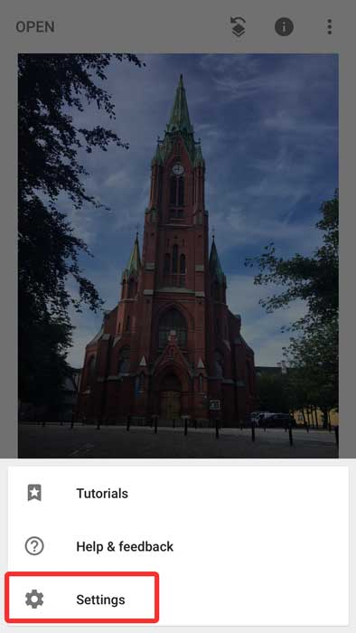

Select image quality.

Settings.Format and quality.Try to avoid filters or "looks". Edit the pictures with "tools".These are the tools were are focusing on.Check image exposure on histogram Left edge: shadows | right edge: highlightsSave a copy created a JPG duplicate